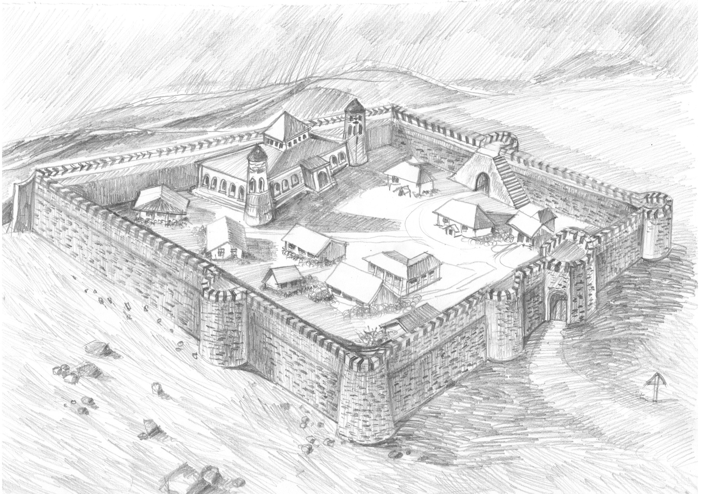
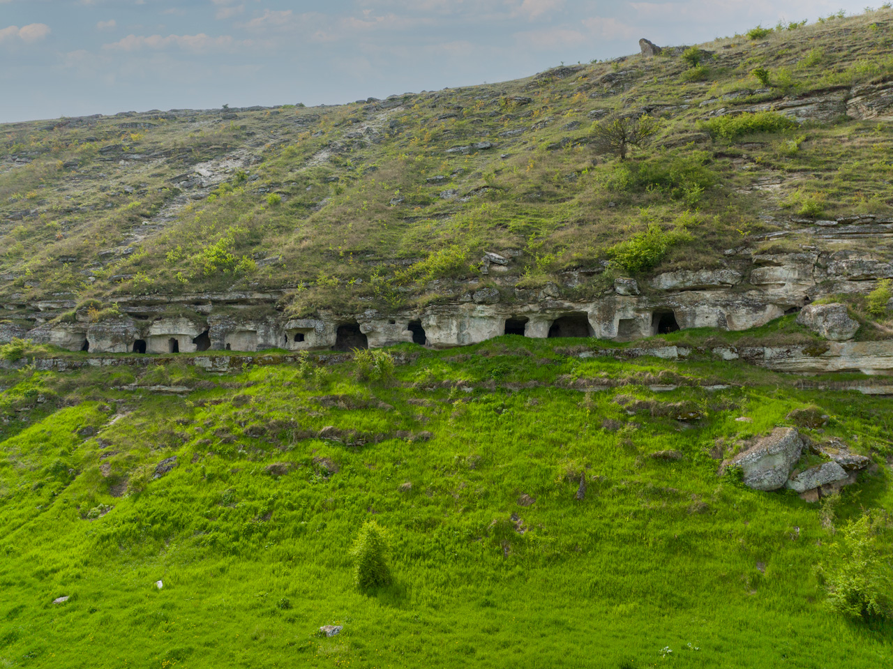
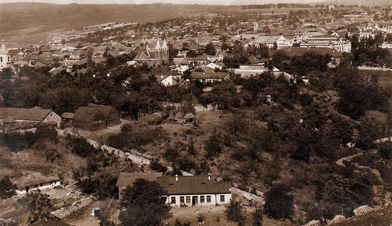
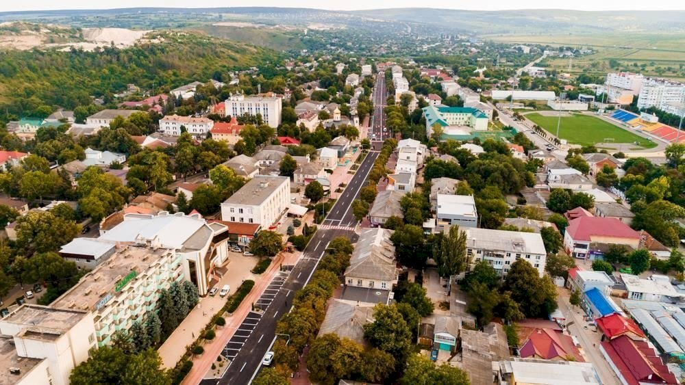

De la primii locuitori preistorici până la capitala modernă a raionului — o poveste de peste 600 de ani
Zona Orheiului este locuită din timpuri preistorice. Cercetările arheologice au demonstrat prezența omului pe aceste meleaguri din epoca bronzului. Geto-dacii au lăsat urme clare ale civilizației lor în zona Văii Răutului, iar în epoca romană aceasta reprezenta o zonă de contact și comerț cu Imperiul.
Descoperirile de la Orheiul Vechi atestă existența unui centru important de civilizație cu mii de ani în urmă — unelte de piatră și os, ceramică ornamentată, structuri de locuit și obiecte de cult, toate mărturii ale unor comunități organizate și prospere.
Amplasamentul strategic pe peninsula formată de meandrul Răutului a atras succesiv getodaci, romani, slavi, tătari și moldoveni — fiecare lăsând un strat distinctiv în istoria locului.
Teritoriul actualului Orhei a fost locuit neîntrerupt din neolitic. Cercetările din zona Orheiului Vechi au scos la lumină ceramică pictată, unelte de silex și bronz, și urmele unor locuințe din epoca fierului.
Geto-dacii au ridicat pe peninsula Răutului un important centru tribal — vestigii ale zidurilor de apărare, atelierelor meșteșugărești și sanctuarelor religioase atestă o civilizație complexă.
În epoca romană, zona era un nod comercial pe ruta ce lega coloniile pontice de interiorul carpatic. Monede romane și obiecte de import descoperite confirmă aceste schimburi.

În 1421 apare prima atestare documentară a Orheiului ca târg și cetate pe malul Răutului. Cetatea a servit ca punct strategic de apărare împotriva invaziilor tătarilor și otomanilor.
Domnia lui Vasile Lupu (1634–1653) aduce o epocă de aur — construcții majore, rute comerciale dezvoltate și înflorire culturală fără precedent. Mănăstirea rupestră de la Orheiul Vechi este construită în această perioadă.

În 1812, odată cu anexarea Basarabiei de către Imperiul Rus, Orhei devine reședința județului cu același nume. Apar construcții în stil neoclasic rus, se pavează străzi și se construiesc instituții publice.
În 1918, Orhei devine parte a Regatului României după Unire. Perioada interbelică aduce modernizare, școli, spitale și o viață culturală efervescentă.

Perioada sovietică (1940–1991) aduce industrializare forțată și transformări urbane profunde. Populația crește, apar întreprinderi industriale, blocuri de locuințe și infrastructură modernă.
Din 1991, Orhei devine raion al Republicii Moldova independente. Are loc o redescoperire a patrimoniului cultural, restaurarea monumentelor istorice și dezvoltarea turismului.

Evenimentele care au modelat destinul orașului de-a lungul veacurilor
Hoardele tătaro-mongole ocupă și reorganizează zona; apar primele urme ale așezărilor medievale. Perioada marchează o transformare profundă a structurii demografice.
Orhei este menționat pentru prima dată în documente oficiale ca târg și cetate a Moldovei medievale, pe drumul comercial ce lega Iașul de Cetatea Albă.
Construcția mănăstirii rupestre de la Orheiul Vechi; călugări ortodocși sapă chilii și o biserică în stâncile calcaroase, creând un monument unic al credinței.
Epocă de aur pentru Moldova și implicit pentru Orhei — construcții majore, rute comerciale înfloritoare și o cultură de curte de nivel european.
Unul dintre cele mai importante ansambluri monastice din Moldova este fondat în mijlocul pădurii, la 12 km de Orhei. Renovarea majoră din 1835–1868 îi conferă înfățișarea actuală.
Orhei devine parte a județului Orhei din Regatul României. Urmează o perioadă de modernizare intensă — școli, spitale, drumuri și o efervescență culturală remarcabilă.
Industrializare accelerată și transformare urbană profundă. Apar blocuri de locuințe, fabrici și instituții de tip sovietic. Tradițiile culturale sunt parțial suprimate.
Orhei devine raion al Republicii Moldova independente. Are loc o redescoperire a patrimoniului cultural — restaurări, muzee noi, turism în creștere și mândrie locală redobândită.
Orhei și împrejurimile au dat naștere unor personalități de prim rang ale culturii și istoriei moldovenești
Domn al Moldovei (1634–1653), a condus una dintre cele mai strălucite epoci ale principatului. Cunoscut pentru diplomație și mecenism cultural.
Cel mai iubit interpret de muzică populară moldovenească, originar din zona Orheiului. Vocea sa a dus numele Moldovei în toată lumea.
Unul dintre cei mai importanți scriitori moldoveni ai sec. XX. Operele sale — „Frunze de dor", „Povara bunătății noastre" — sunt capodopere ale literaturii române.
Compozitor de renume mondial, autorul celebrului vals din filmul „Gingașa și tandra mea fiară". Muzica sa a cucerit milioane de inimi pe toate continentele.
Pentru aprofundarea studiului istoriei Orheiului și Republicii Moldova:
🌐 Wikipedia – Orhei (ro)